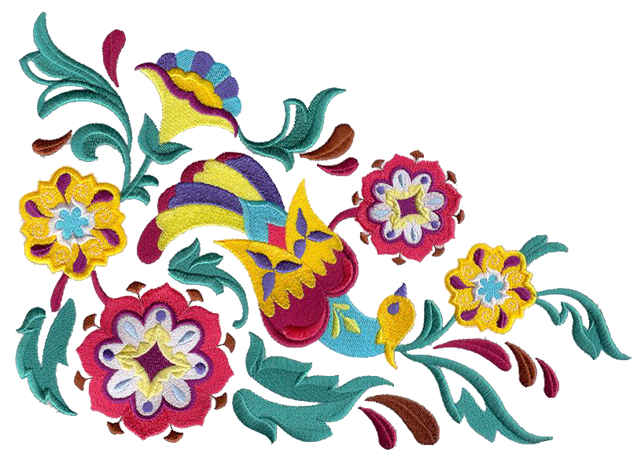

Home
Diversity
Northern Mexico
Central Mexico
Southern Mexico
Western Mexico
Sources
Baile Folklorico
Sources
Content
https://en.wikipedia.org
Images
[1]
https://pamplinmedia.com
[2]
https://www.oregonmetro.gov
[3]
https://www.latimes.com
[4]
https://asunow.asu.edu
[5]
https://www.nbcnews.com
[6]
https://www.inah.gob.mx
[7]
http://www.tropicozacatecas.com
[8]
https://www.lovingmexico.net
[9]
https://www.mayaturistic.com
[10]
https://www.morelosturistico.com
[11]
https://www.maspormas.com
[12]
https://www.mexicodesconocido.com
[13]
https://roveratlas.com
[14]
http://conocezoque.blogspot.com
[15]
https://www.joya.life
[16]
https://www.youtube.com
[17]
https://www.journeymexico.com
[18]
https://mexicandancemasks.com
[19]
http://www.museonacionaldelamascara.com
[20]
https://imparcialoaxaca.mx
